| TOP | weblog | TIPS | Works | リンク |
| Mozila FireFox/Google ChromeへのWindows Media Player Pluginのインストール Windows Media Player Plugin がインストールされているかチェックするウェブページがあります。 Windows Media Test インストールされていないとこうなります。 FireFox 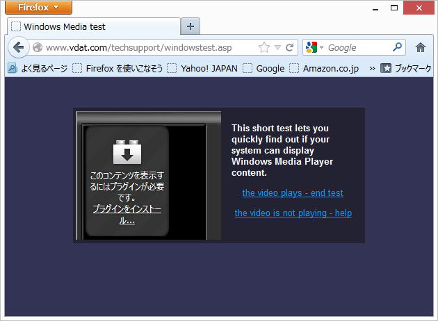 Chreme 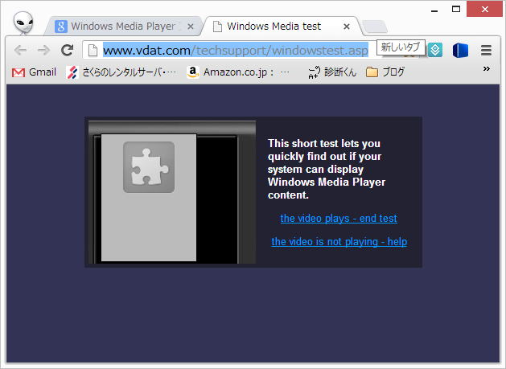 インストールされている状態（IE10の例） 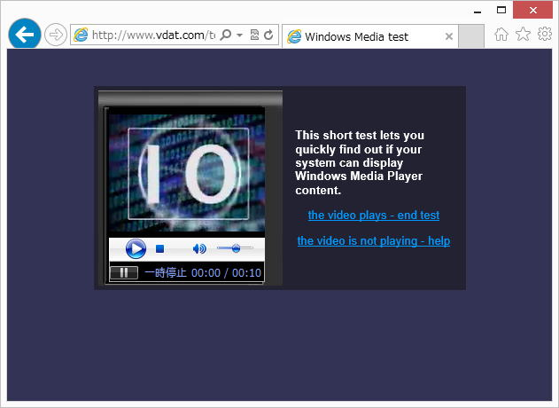 １０からカウントダウンする動画と音質の悪いサウンドが鳴ります。 Windows Media Player がインストールされていなければ以下のページの手順でセットアップしてみてください。 そして、もうもう一度 Windows Media Test を開いて、確認してください。 Windows Media Player Plugin ダウンロードとインストール −警告ー 以下の操作はWIndowsのシステムを変更します。 例のごとく予期せぬ事態が発生する可能性があります。 Windowsがへんな事になっても責任は負いません、自己責任でお願いいたします。 FireFoxの手順 Chromeの手順 FireFoxの手順 WindowsXPでの例です、ほかのOSは適当に置き換えてセットアップしてみてください。 「NTEROPERABILITY BRIDEGES AND LABS CENTER」 から、Firefox用の「Windows Media Player Plugin」をダウンロードします。 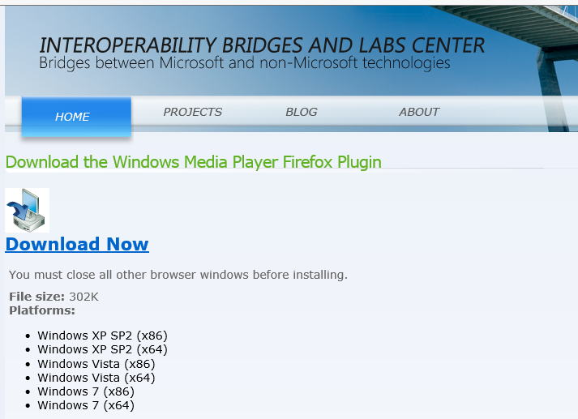 Download Now をクリックして、以下の手順でインストールしてください。 WindowsXP & FireFox の例 １）[ファイルを保存]をクリック・ 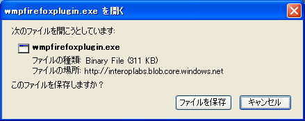 ２）アイコンあたりを右クリック。 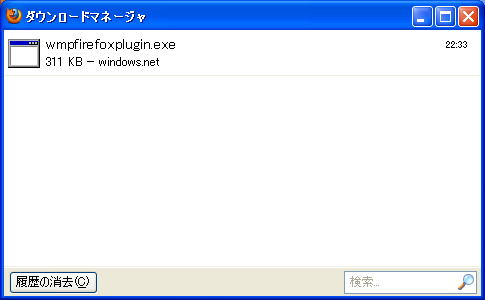 ３）[開く]をクリック 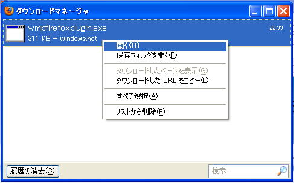 ４）[OK]をクリック。 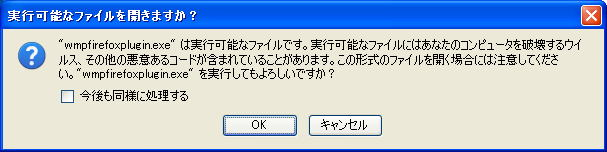 ５）[実行]をクリック。 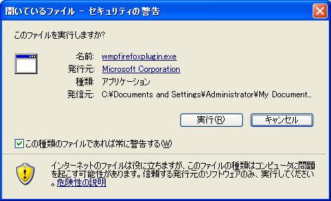 ６）[Next]をクリック 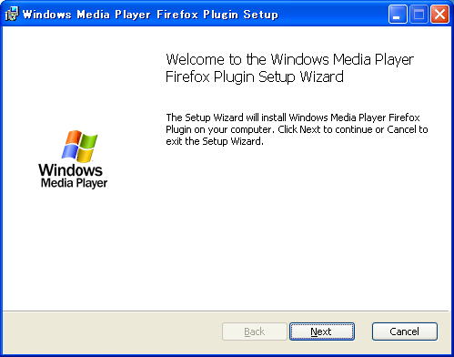 ７）[Next]をクリック。 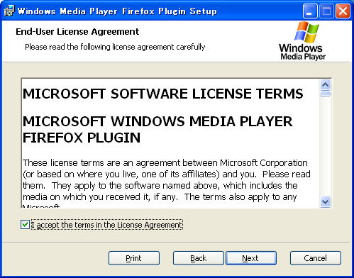 ８）[Install]をクリック 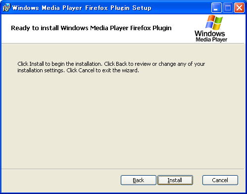 ９）[Finish]をクリック 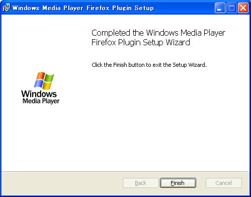 （補足説明） このプラグインをインストールしてもストリーミング再生できない場合があるようです。 FireFoxのアドオンページ（US）から 「MediaPlayerConnectivity 0.9.4」 をダウンロード＆インストールすると出来るかもしれません。 [add to FireFox]をクリック。 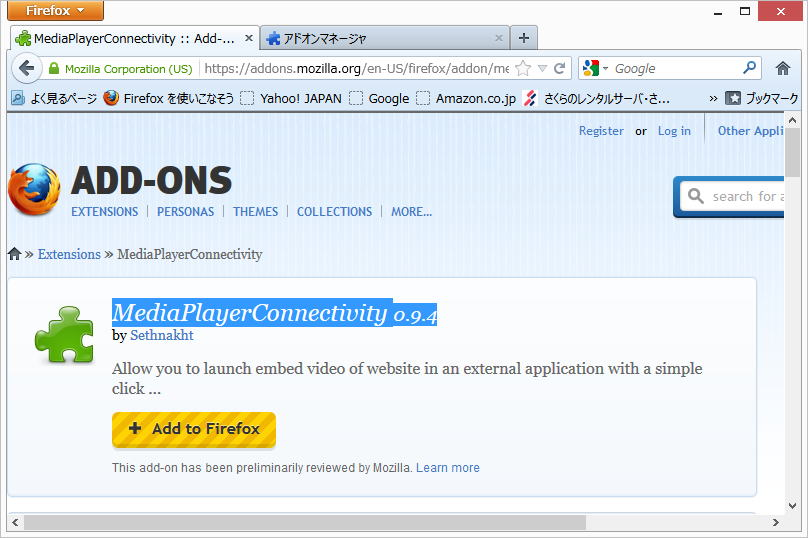 [今すぐインストール] 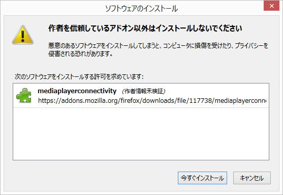 [今すぐ再起動]をクリック。 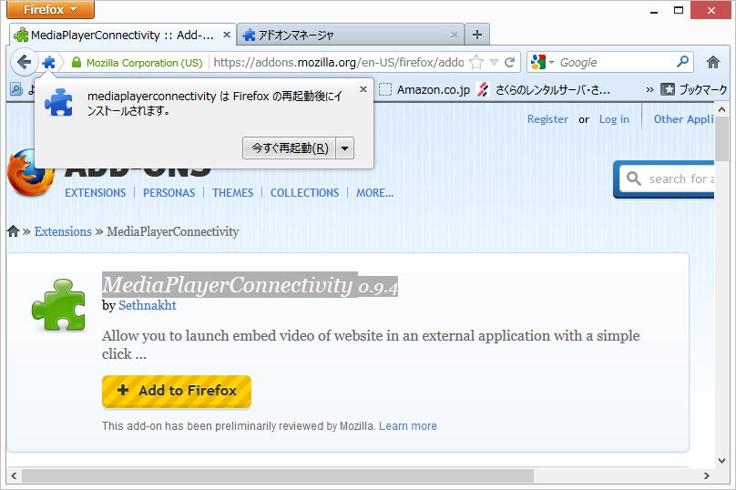 設定を変更しましょう、 [mediaplaayerconnectivity 0.9.4]]の[設定]ボタンをクリック。 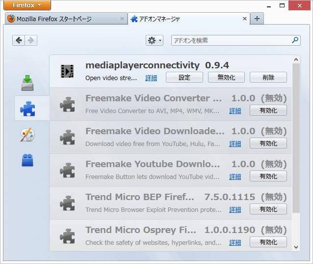 [configuration(1/2)]を以下のようにします。 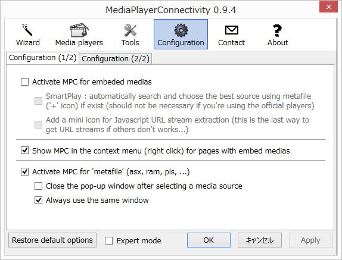 [confederation(2/2)]を以下のようします。 [OK]ボタンを押します。 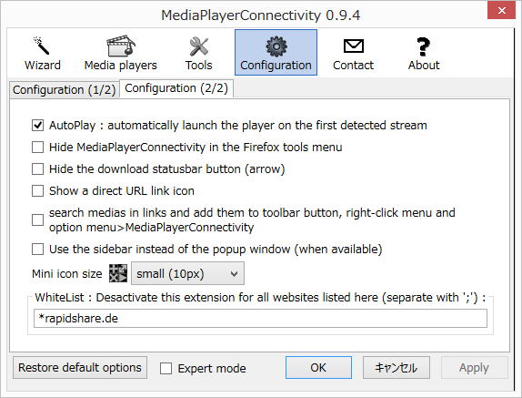 以上の設定でリンクをクリックすると自動的にストリーミング再生されるはずです。 尚、wmaファイルへのリンクが「新しウィンドウを開く」(target="_blank)のときは、新しいタブにプラグインウィンドウが全面表示されます。 「同じウィンドウ」(target="_self")のときは、（当たり前ですが）同じタブにプラグインウィンドウが表示されます。 Chermeの手順 Cherme用のプラグインは、 「NTEROPERABILITY BRIDEGES AND LABS CENTER 」からダウンロードできます。 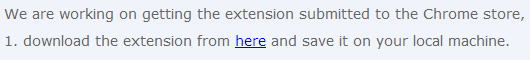 「here」ををクリックすると「wmpChrome.crx」がダウンロードされます。 ここからが、面倒な手順です。 Chermeの右上、 をクリックし、[ツール]-[拡張機能] をクリックします。 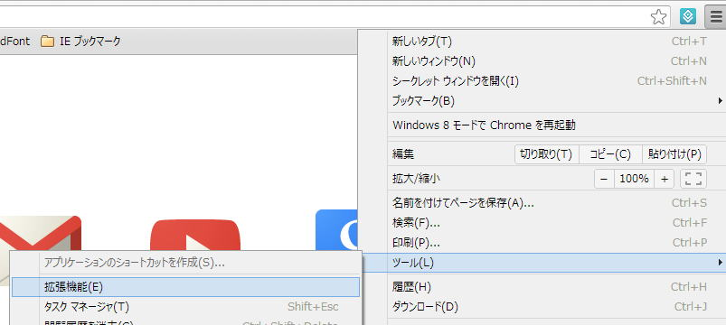 Chrome機能拡張ウィンドウにダウンロードした「wmpChrome.crx」をドラッグ＆ドロップします。 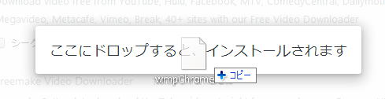 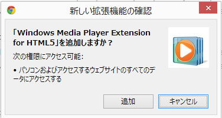 [追加]ボタンを押して完了です。 |